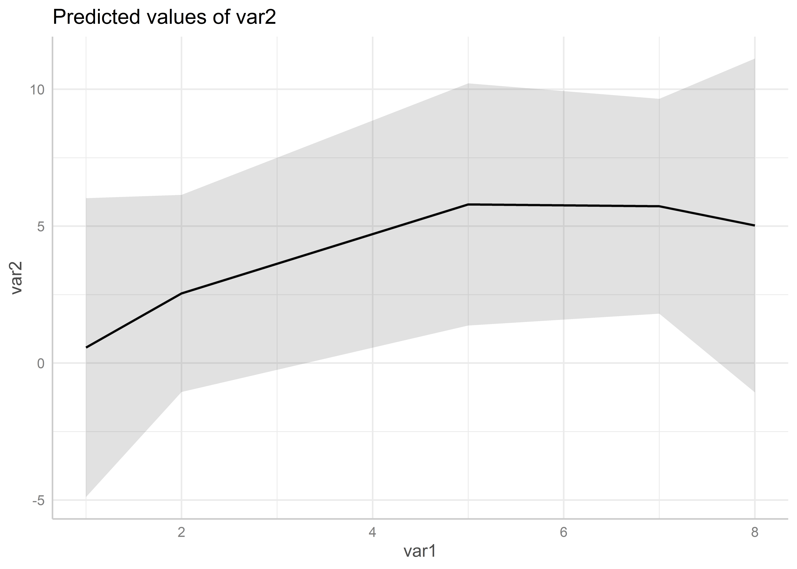

Es zeigt sich, dass in Modell m4 mit edu_fct 1 Fall verloren geht. Woran liegt das? Dazu lohnt sich ein Blick in die Daten:
dat1
id var1 var2 educ gend x ed_fct
1 1 2 2 3 2 2 high
2 2 1 2 1 1 1 basic
3 3 2 1 2 1 2 medium
4 4 5 9 2 2 4 medium
5 5 7 7 1 1 1 basic
6 6 8 4 3 2 NA high
7 7 9 25 2 1 NA medium
8 8 5 3 -1 2 NA <NA>
Die Angabe für ed_fct fehlt in für id = 8.
Um die Modelle zu vergleichen sollten wir also nur die Zeilen verwenden, für die auch die Werte für ed_fct vorliegen. Hier können wir diese Zeilen per Hand auswählen (und id=8 ausschließen), in größeren Datensätzen ist das aber mühsam.
9.1.1complete.cases()
Hier hilft uns complete.cases(). Diese Funktion erstellt eine logische Variable, welche ein TRUE für alle vollständigen Fälle (also ohne ein NA). Unvollständige Fälle werden mit einem FALSE versehen. Dazu geben wir an, welche Variablen jeweils für diese Betrachtung berücksichtigt werden sollen und legen die Variable einfach im Datensatz als neue Spalte an. Für Modell 1 ist ein Fall complete, wenn var2 und var1 vorliegen. Wir wählen also mit select() die relevanten Variablen aus und wenden complete.cases auf diese Auswahl an:
id var1 var2 educ gend x ed_fct compl_m1
1 1 2 2 3 2 2 high TRUE
2 2 1 2 1 1 1 basic TRUE
3 3 2 1 2 1 2 medium TRUE
4 4 5 9 2 2 4 medium TRUE
5 5 7 7 1 1 1 basic TRUE
6 6 8 4 3 2 NA high TRUE
7 7 9 25 2 1 NA medium TRUE
8 8 5 3 -1 2 NA <NA> TRUE
complete.cases() alleine sucht in allen Variablen nach NA
Achtung: wenn wir keine Variablen angeben, werden NA aus allen Variablen berücksichtigt, hier also auch die NA aus x - die uns hier nicht interessieren:
dat1 %>%complete.cases(.)
[1] TRUE TRUE TRUE TRUE TRUE FALSE FALSE FALSE
dat1$compl <- dat1 %>%complete.cases(.) dat1
id var1 var2 educ gend x ed_fct compl_m1 compl
1 1 2 2 3 2 2 high TRUE TRUE
2 2 1 2 1 1 1 basic TRUE TRUE
3 3 2 1 2 1 2 medium TRUE TRUE
4 4 5 9 2 2 4 medium TRUE TRUE
5 5 7 7 1 1 1 basic TRUE TRUE
6 6 8 4 3 2 NA high TRUE FALSE
7 7 9 25 2 1 NA medium TRUE FALSE
8 8 5 3 -1 2 NA <NA> TRUE FALSE
…das gleiche machen wir für Modell m4, welches neben var2 und var1 ja auch noch ed_fct enthält:
id var1 var2 educ gend x ed_fct compl_m1 compl_m4
1 1 2 2 3 2 2 high TRUE TRUE
2 2 1 2 1 1 1 basic TRUE TRUE
3 3 2 1 2 1 2 medium TRUE TRUE
4 4 5 9 2 2 4 medium TRUE TRUE
5 5 7 7 1 1 1 basic TRUE TRUE
6 6 8 4 3 2 NA high TRUE TRUE
7 7 9 25 2 1 NA medium TRUE TRUE
8 8 5 3 -1 2 NA <NA> TRUE FALSE
9.1.2 Fälle mit missings finden
Jetzt können wir nach diesen Variablen filtern und uns diese Fälle genauer ansehen. Dazu filtern wir nach den Fällen, die zwar in m1 enthalten (also compl_m1 = TRUE) sind, aber nicht in m4 (compl_m4 = FALSE):
dat1 %>%filter(compl_m1 == T & compl_m4 == F)
id var1 var2 educ gend x ed_fct compl_m1 compl_m4
1 8 5 3 -1 2 NA <NA> TRUE FALSE
9.1.3 Modelle nur mit vollständigen Fällen berechnen
Außerdem können wir jetzt auch das Modell m1 so erstellen, dass wir nur die Fälle miteinbeziehen, die auch in Modell2 berücksichtigt werden:
m1_m4vars <-lm(var2 ~ var1 , data =filter(dat1,compl_m4 == T))modelsummary(list("m1"=m1,"m1 mit m4vars"=m1_m4vars,"m4"=m4),gof_omit ="IC|RM|Log|F",output ="flextable")
m1
m1 mit m4vars
m4
(Intercept)
-2.340
-1.832
-2.511
(4.345)
(4.646)
(5.681)
var1
1.839
1.848
1.753
(0.773)
(0.814)
(0.835)
ed_fctmedium
4.830
(6.038)
ed_fcthigh
-3.253
(6.554)
Num.Obs.
8
7
7
R2
0.486
0.508
0.700
R2 Adj.
0.400
0.409
0.400
Jetzt haben wir also in m1 mit m4vars und m4 die gleiche Fallzahl und können so die Ergebnisse direkt miteinander vergleichen.
9.2 Interaktionen
Interaktionen zwischen zwei Variablen können wir mit * berechnen:
Call:
lm(formula = var2 ~ var1 + I(var1^2), data = dat1 %>% filter(id !=
7))
Residuals:
1 2 3 4 5 6 7
-0.5443 1.4334 -1.5443 3.2043 1.2713 -1.0248 -2.7957
Coefficients:
Estimate Std. Error t value Pr(>|t|)
(Intercept) -1.8580 3.4066 -0.545 0.614
var1 2.6481 1.9083 1.388 0.238
I(var1^2) -0.2235 0.2110 -1.059 0.349
Residual standard error: 2.524 on 4 degrees of freedom
Multiple R-squared: 0.5099, Adjusted R-squared: 0.2648
F-statistic: 2.081 on 2 and 4 DF, p-value: 0.2402
ggpredict(m6, terms =c("var1")) %>%plot()

9.4 Gewichtetes Regressionsmodell
library(survey)pend <- haven::read_dta("./orig/PENDDAT_cf_W13.dta") %>%filter(netges >0 , palter >0, azges1 >0) %>%mutate(zpsex_fct =factor(zpsex, levels =1:2, labels =c("M","W")))wgt_df <- haven::read_dta("./orig/pweights_cf_W13.dta")pend_wgt <- pend %>%left_join(wgt_df, by =join_by(pnr,welle))modx <-lm(netges ~ palter +I(palter^2),data=pend)pend_weighted <-svydesign(id =~pnr,weights =~wqp,data = pend_wgt)# family = gaussian() bekommen wir ein lineares Regressionsmodell, wie bei lm() - mit gewichtetsurvey_modx <-svyglm(netges ~ palter +I(palter^2), family =gaussian(), data = etb18,design = pend_weighted)modelsummary(list("lm()"=modx,"svyglm()"= survey_modx),gof_omit ="RM|IC|Log",output ="flextable")
lm()
svyglm()
(Intercept)
811.753
463.721
(354.363)
(504.015)
palter
24.640
53.580
(17.071)
(26.471)
I(palter^2)
-0.147
-0.489
(0.197)
(0.314)
Num.Obs.
7996
7996
R2
0.004
0.007
R2 Adj.
0.004
-2.252
F
15.525
8.495
9.5 “Robuste” Standardfehler
Häufig müssen die Standardfehler an Verstöße gegen die allgemeinen Annahmen (Homoskedastizität usw.) angepasst werden.
Die gute Nachricht ist, dass R eine ganze Reihe an Möglichkeiten bietet, Standard-Fehler zu korrigieren. Unter anderem mit {sandwich} oder {estimatr}.
Eine sehr einfache Variante ist die Korrektur von Standardfehlern in {modelsummary}, die wir uns etwas genauer ansehen:
Wir können sog. heteroskedasticity-consistent (HC) “robuste” Standardfehler mit der vcov-Option HC in modelsummary() anfordern. Die Hilfe-Seite für {modelsummary} bietet eine Liste mit allen Optionen.
Eine Option ist auch stata, um Ergebnisse aus Statas , robust zu replizieren. Hier mehr zu den Hintergründen und Unterschieden.
{fixest}) bietet eine große Auswahl an Möglichkeiten: logistische FE-Modelle, mehr-dimensionale Fixed Effects, Multiway clustering, … Und es ist sehr schnell, bspw. schneller als Statas reghdfe. Für mehr Details empfiehlt sich die Vignette.
Die zentrale Funktion zur Schätzung linearer FE-Regressionsmodelle ist feols() - sie funktioniert ganz ähnlich zu lm(). Auch hier geben wir wieder eine Formel nach dem Schema abhängige Variabe ~ unabhängige Variable(n) an. Wir fügen lediglich mit | die Variable hinzu, welche die FEs festlegt:
library(fixest)fe_mod1 <-feols(netges ~ palter +I(palter^2) | pnr, data = pend)fe_mod1
{fixest} clustert automatisch die Standardfehler entlang der FE-Variable (hier also pnr). Wenn wir das mal nicht möchten, können wir mit der se-Option = "standard" ungeclusterte SE anfordern:
Mit lmer() können wir ein Random Intercept Modell berechnen, indem wir mit ( 1 | pnr) angeben, dass für pnr jeweils ein eigenes Random Intercept berechnet werden soll:
Mit predictions() aus {marginaleffects} können wir basierend auf unserem Modell vorhergesagte Werte für bestimmte Werte berechnen. Dazu geben wir die die gewünschten mit einem expand.grid() an.
# Kombinationen aller Werte erstellenexpand.grid(var1 =1:5, g_fct =c("women","men"))
var1 g_fct
1 1 women
2 2 women
3 3 women
4 4 women
5 5 women
6 1 men
7 2 men
8 3 men
9 4 men
10 5 men
Diese Werte geben wir dann in predictions() als newdata = an:
Für den ggplot() verwenden wir dann geom_line() zusammen mit
geom_errorbar() für eine Darstellung mit Konfidenzintervallen als Error Bars
mit geom_ribbon() erhalten wir die Konfidenzintervalle als Konfidenzbänder (hier müssen wir mit alpha = die Deckkraft der etwas heruntersetzen und die Farbe mit fill= angeben um den Bereich einzufärben).
pred_plt <-ggplot(data=data.frame(p),aes(x = var1, y = estimate, ymin = conf.low,ymax = conf.high,color = g_fct)) +geom_line() +scale_color_manual(values =c("orange","lightskyblue3"),breaks =c("women","men"),labels=c("Frauen","Männer")) +labs(title ="Vorhergesagte Werte für var2",color ="Gender",x ="Werte für var1",y ="Vorhergesagte Werte für var1") +theme_minimal()# Konfidenzintervallepred_plt +geom_point(size =2.75) +geom_errorbar(width = .1)# mit Konfidenzbändernpred_plt +geom_ribbon(alpha = .1, color =NA,aes(fill = g_fct)) +scale_fill_manual(values =c("orange","lightskyblue3"),breaks =c("women","men"),labels=c("Frauen","Männer")) +labs(fill ="Gender")